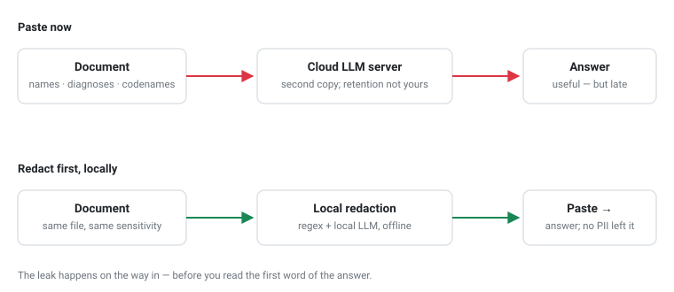

Everyone now has a private AI assistant one keystroke away, and the shortcut is irresistible: paste the contract in, ask for a summary. Paste the patient notes in, ask for a table. Paste the vendor agreement in, ask “what are the termination clauses?” It feels like copying text to a colleague. It is not — and knowing how to redact PII before sending to an LLM has become a basic document-hygiene skill. The paste creates a second copy of your most sensitive document — names, identifiers, diagnoses, pricing, codenames — on somebody else’s server, in an account whose retention settings you do not control.
If you already redact documents for a living, none of this is new. What is new is the destination. Redaction used to be about the recipient: the FOIA release, the filed exhibit, the shared report. Now the “recipient” is a summarization request, and the leak happens before you read the first sentence of the answer. This post is about the workflow that fixes it — automatic, verifiable, with the document never leaving your machine.
I build privacy-first, local-first tools for exactly this problem. PrivateRedact is a desktop app that finds and removes PII from PDF, DOCX, and images using a local LLM, and I wrote a technical deep dive on its architecture. This post is the part that matters before any architecture: what to scrub, in what order, and how to prove you got it.
Think of the pasted text as a disclosure, because that is what it is. Three tiers leave with it:

Metadata is a fourth channel, but it is out of scope for a paste — it matters when you attach the file, and it is covered in the redaction guide.
Regex is the right first tool and the wrong only tool. It nails the well-formatted tier: SSNs, payment cards, IBANs, dates of birth. Two hard limits show up immediately in LLM-prep work:
And the manual route fails worst of all: hand-drawn boxes miss page 47’s SSN, and in most viewers the rectangle covers the rendering, not the text — select-and-copy underneath reveals everything. If the document is worth protecting, it is worth a pipeline that re-reads its own output.
This is the checklist I use, whether by hand or in the app:
The step most workflows skip is the one I trust most: after export, re-OCR the output and scan it again for PII. Not the source — the artifact. If the scan was skipped or failed, the correct report is “could not verify”, never “clean”. And export should leave nothing underneath: in PrivateRedact the output PDF is rasterized and rebuilt, so there is no text layer under the black boxes to select, copy, or peel back. “Redacted” that can be un-redacted with two clicks is not redacted; it is a delay.
The same rule covers metadata, by the way: author names, file paths, and EXIF fields survive most casual exports. Strip them by default, not as an afterthought.
PrivateRedact runs this pipeline offline — PDF, DOCX, images, and scans; regex plus a local LLM; value-only redaction with a review overlay; rasterized export with a leak-scan proof. Load, detect, and review for free; export is a one-time license.
PrivateRedact implements the whole pipeline as a desktop app: PDF, DOCX, images, and scans (OCR with a vision-model double-check on low-quality inputs), regex plus a local LLM, compliance presets for HIPAA / GDPR / PCI DSS / HR / Legal / Financial, value-only redaction with a review overlay, rasterized export with the leak-scan proof, and metadata stripping. It runs entirely on your machine — no upload, no account. Free to load, detect, and review; exporting the redacted file is a one-time license, no subscription.
If you want the engineering details — the extraction fork between born-digital and scanned pages, proportional redaction boxes, why the review overlay and the exporter must share one union function — that is the technical deep dive on Medium. And if your document is headed to a human instead of a model, the Adobe-free redaction guide covers that workflow.
Three tiers: direct identifiers (names, SSNs, account numbers), quasi-identifiers (dates of birth, employers, exact figures — individually harmless, identifying in combination), and context PII (diagnoses, codenames, addresses mentioned in prose). The third tier is the one regex misses and the one an LLM pass exists for.
Treat every paste as a disclosure to a system you do not control. Some services offer retention and training opt-outs on some tiers; the safe default for anything sensitive is to remove the PII first and treat the “safe settings” as a second layer, never the first.
Yes — that is value-only redaction: black the value, keep the label and surrounding text. It is harder to build than line-blacking, and it is the difference between a document you can still work with and a wall of black bars.
Yes — a scanned page is an image, so there is no text layer to search unless you OCR it first. Word-level OCR boxes are what allow precise, value-only redaction on scans; paragraph-level boxes force line-blacking.
Strip it. Author names, file paths, and image EXIF survive most casual export flows, and they leak even when the visible text is perfectly redacted. Default-on stripping is the only setting that survives a busy day.
Reduce the blast radius anyway. The copy of the document that lives in the assistant’s history is a copy you no longer govern — and the cheapest moment to fix that is before the paste, not after.
I'm Muhammad Karim — transportation researcher; I build privacy-first, local-first tools: PrivateRedact, Self-Hosted RAG, MeetingMint, AudioRecord.